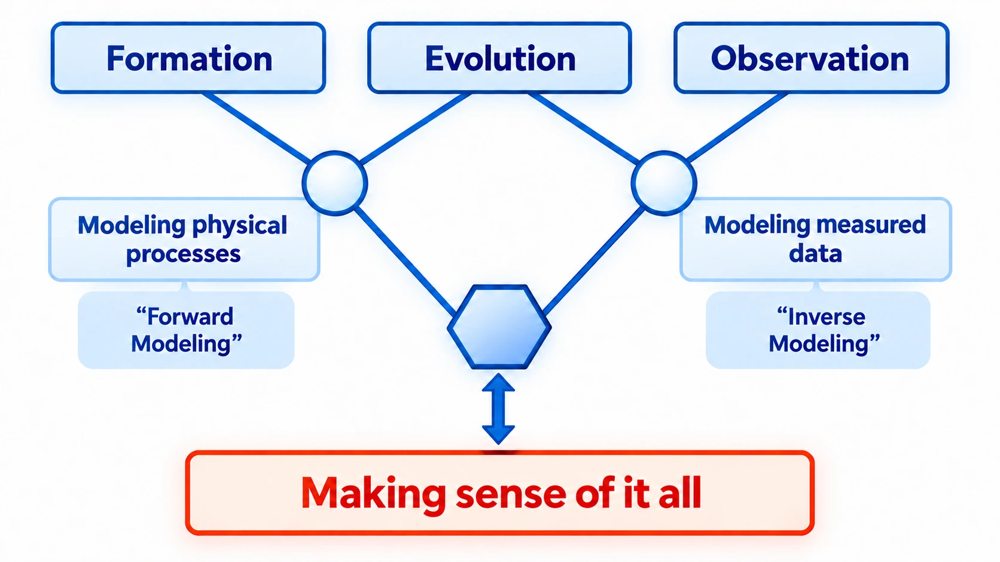
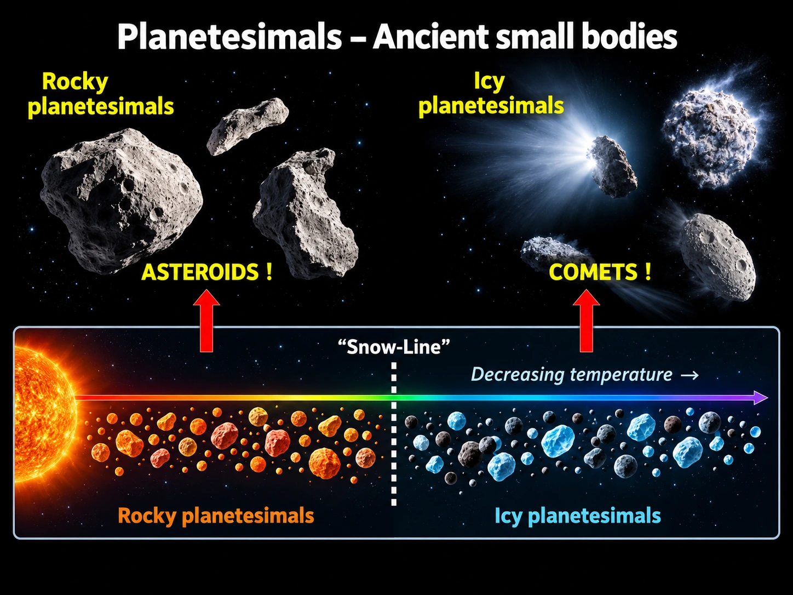
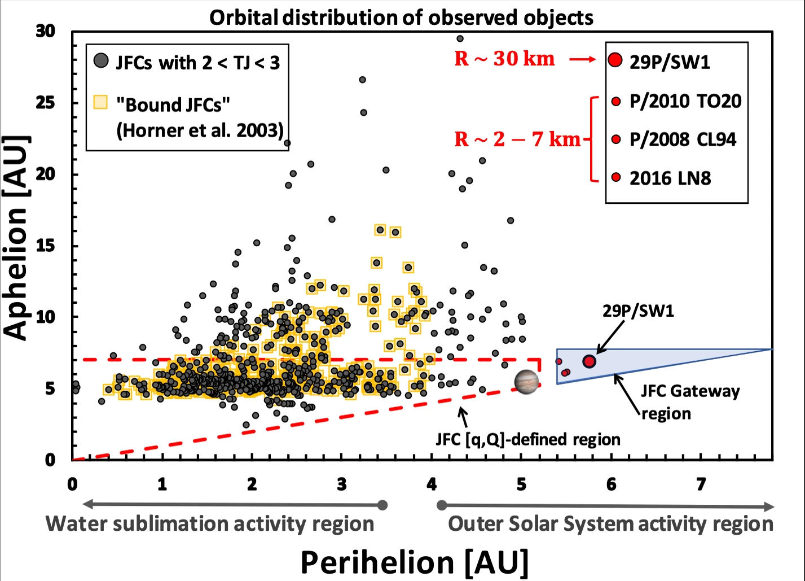
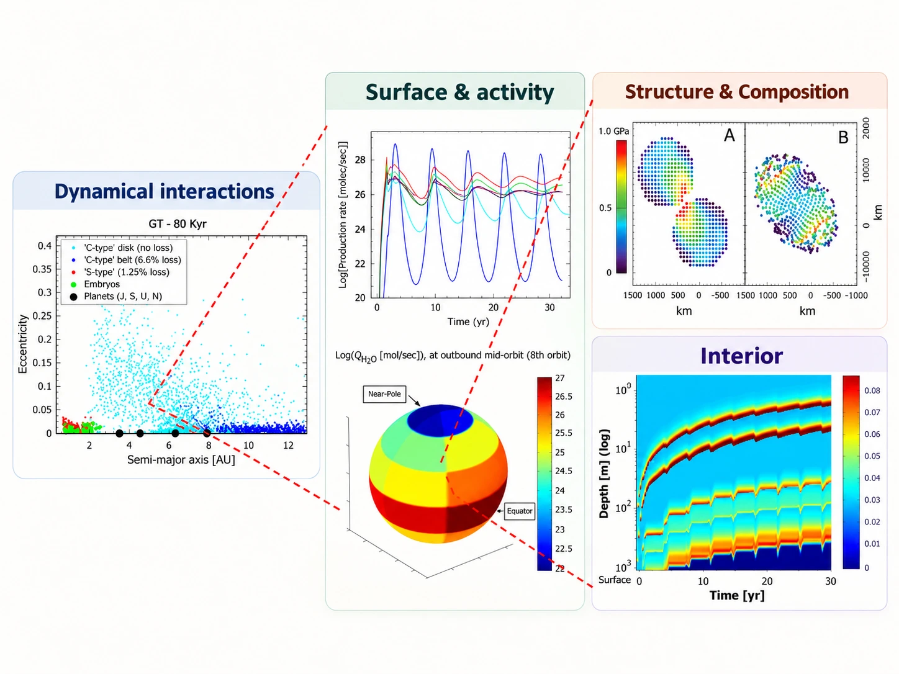

Formation and thermal evolution
My early work modeled heat and mass transport in comet nuclei and other icy bodies: when volatiles move or survive, how interior structure changes, and what present-day activity may remember about earlier conditions.
Start with a physical model, ask what is actually observable, and let the data push back. That approach has followed me from comet interiors and asteroid dynamics to calibration of Earth-observing instruments.

The diagram uses “forward-engineering” and “backward-engineering” as my own shorthand. In more standard scientific language, the left side is forward modeling: start from physical assumptions and calculate what should happen. The right side is inverse modeling, retrieval, or inference: start from measurements and work back toward the physical state that could have produced them.
The interesting part is the loop between the two. A model that cannot reproduce the data needs work; a measurement that cannot be interpreted through the physics is not enough by itself.
Comets, Centaurs, trans-Neptunian objects, and asteroids preserve clues about formation, later processing, and movement through the Solar System. My planetary work has mostly asked how those pieces fit together.


My early work modeled heat and mass transport in comet nuclei and other icy bodies: when volatiles move or survive, how interior structure changes, and what present-day activity may remember about earlier conditions.
Later work coupled physical questions to orbital history, including the Centaur-to-Jupiter-family-comet transition and the Gateway region exterior to Jupiter.
A small body does not have separate dynamical and physical histories. Its orbit shapes the thermal environment, which influences the evolution of its interior, surface, and composition. Activity, impacts, and binary interactions can further modify the body and what we observe.
The figure provides a visual overview of these connections, bringing together examples of the physical processes and research questions I have investigated. Its purpose is to illustrate the broader relationship and context of these distinct, but scientifically related, modeling efforts, rather than present a single evolutionary sequence or the results of one integrated model.

For a satellite record that runs for many years, the instrument changes, the orbit changes, and the geometry changes. If those effects are not understood, they can be mistaken for changes in the Earth scene.


I support calibration of the reflective solar bands on Terra and Aqua MODIS as a member of the MODIS Characterization Support Team. Recent work has focused on what happens as orbital drift changes the solar-diffuser viewing geometry late in the missions.
I also support calibration of the VIIRS day–night band on NOAA-20 and Suomi NPP. The DNB spans a very large radiometric range, so gain behavior and long-term calibration need to be tracked carefully.
Collaborative work includes NOAA-21 calibration/performance analysis, and I presented the DNB calibration update at the 2026 MODIS/VIIRS Calibration Workshop.
I use computation to make physical assumptions explicit, compare them with data, and repeat the analysis without relying on a one-off calculation.
Heat and mass transfer, orbital dynamics, ejecta evolution, and related physical systems.
Time series, trends, uncertainty checks, cross-comparisons, and diagnostics for large scientific datasets.
Python, C/C++, Fortran, shell scripting, Linux, and Git. I care about code that can be checked, reproduced, and maintained.